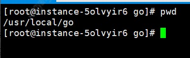
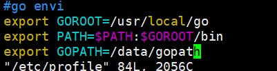
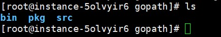
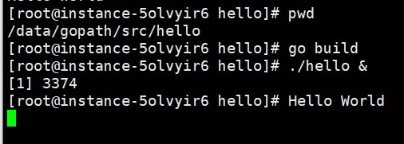

1,下载合适的go安装包 https://studygolang.com/dl
2 上传到 centos服务器的 /usr/local下然后解压

3.设置go的环境变量 vim /etc/profile

保存后执行 source /etc/profile 使其生效
GOPATH填你自己的go工作目录,GOPATH下创建3个目录 bin pkg src，src即部署go的工作目录

4.执行 go version 查看go版本，go env 查看环境信息
5.将你的go项目放到src下面，在项目目录下执行 go build , go run 等运行项目(./XXX 也可运行项目)
